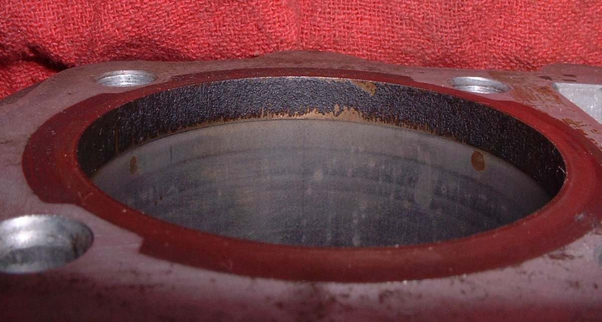
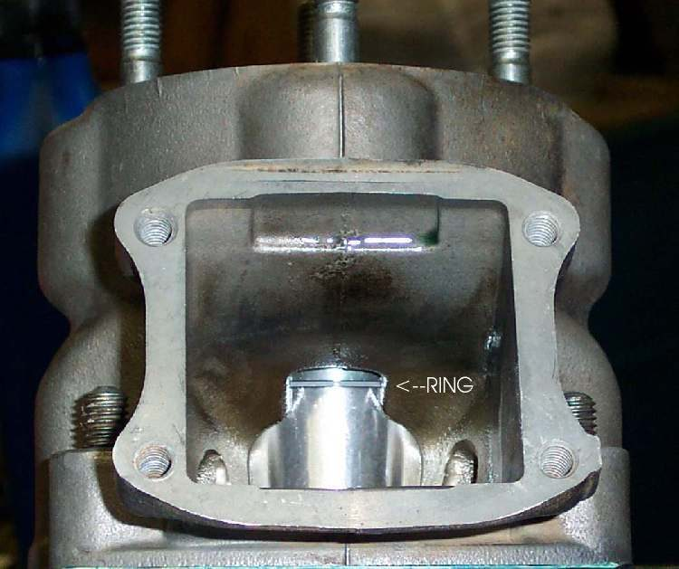
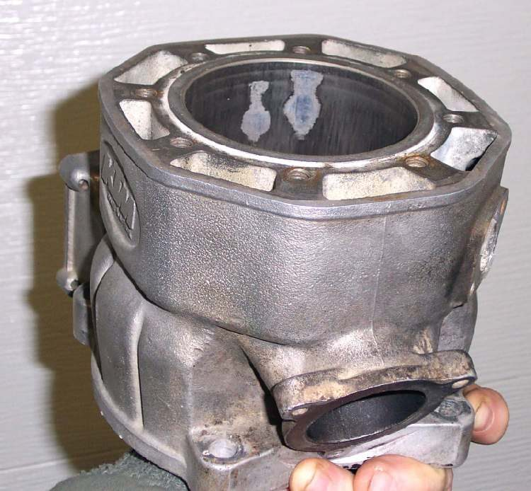
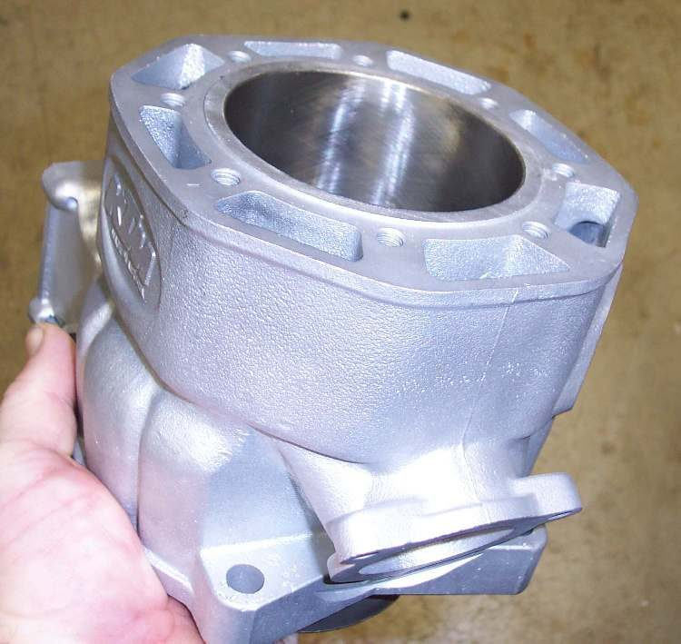

The cylinder is the finned tube that the piston slides up and down in. It sits between the crankcase and the cylinder head. On a two-stroke, the cylinder wall also has the ports that let mix in and exhaust out.
What it does
The cylinder guides the piston and, with the rings, seals the pressure of the burning mix. Fins carry heat away into the air on air-cooled engines. The inside wall (the bore) slowly wears oval and tapered, most at the top. Dust that passes a bad air filter wears it fast, and overheating can score it.
Signs it is worn or failing
- Blue or grey smoke and oil level falling.
- Low compression and low power.
- Piston slap: knock when cold.
- Smoke from the breather (gas blowing past the rings).
- Deep scratches after a seizure.
When to replace it
When the bore is past the size, taper or out-of-round limit, or deeply scored. Many commuter cylinders with an iron liner can be bored oversize and fitted with an oversize piston. Plated aluminium bores cannot be bored; they are replated or replaced. Follow your bike's manual and the workshop's measurements.
What to match when buying
- Match engine code and bore size. Kits sold as "big bore" change the engine and may not be legal or reliable.
- Cylinder kits often come with piston, rings, pin and gaskets. Check the piston size marked on the crown matches the bore.
- Look for a clean, cross-hatched bore, no casting holes in the bore and straight fins. A cheap kit with a poor finish can wear out in weeks.
Fitting notes
- Workshop job. Measure the bore in six places: top, middle and bottom, in line with and across the crank.
- Use a new base gasket and dowels, oil the bore, and compress the rings carefully.
- See Assess the top end.
- After honing or boring, wipe the bore with a clean oiled rag. If dirt comes off, wash it in hot soapy water, dry it and oil it at once.
- Look for rust pits. If any remain after honing, the bore may have to go to the next oversize.
Reference (K-Light 125)
| Item | Value | PDF page |
|---|---|---|
| Nominal bore | 56.5 mm | 19 |
| Taper and out-of-round limit | 0.05 mm | 213 |
| Top face flatness | standard 0.03 mm, limit 0.05 mm | 213 |